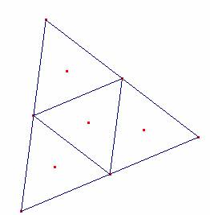
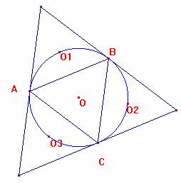
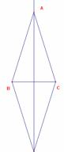
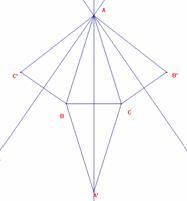
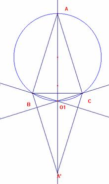
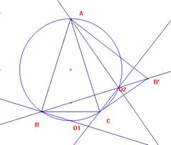
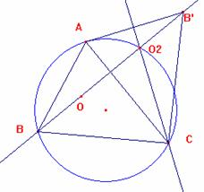
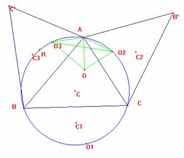
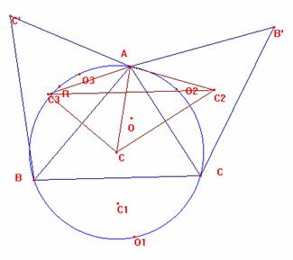
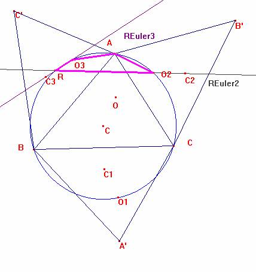

Dado un Triangulo ABC , se construyen los triángulos simétricos con respecto a cada un de los lados del triángulo ABC . Las rectas de Euler trazadas en cada uno de estos triángulo se intersectan en un punto P. Además, el punto P y los ortocentros de los triángulos simétricos pertenecen a la circunferencia circunscrita en el triángulo ABC.
Benitez, D, Leija, N.L. (2005): Comunicación personal.
Solución de Ricardo Barroso Campos, editor y director.
a) Caso de ser el triángulo equilátero.

El circuncentro, baricentro y ortocentro se confunden en el centro, con lo que las rectas se degeneran en un punto.
Los ortocentros de los tres reflejados están en la circunferencia circunscrita al original:

Es, por ángulos ‹ OBA= 30º; ‹ ABO1=30; ‹ OAB=30º, ‹ BAO1=30º, por la simetría respecto a AB.
Luego es ‹ AO1B=180º-30º-30º=120º Y al ser ‹ ACB=60º, es el cuadrilátero ACBO1 inscriptible cqd.
b) Caso triángulo isósceles.
|
 |
Consideremos el simétrico respecto a BC: La recta de Euler es la mediatriz de BC, por ser también mediana, y altura del triángulo simétrico. Consideremos el simétrico respecto a AC y AB. Por ser ambos isósceles, sus rectas de Euler de nuevo serán las mediatrices de CB’ y de BC’ con lo que pasarán por A. Así las tres rectas pasan por A, que es de la circunferencia circunscrita a ABC. |
 |
Veamos que O1, ortocentro de BCA’ está sobre la circunferencia circunscrita a ABC.
|
 |
Al ser CO1 perpendicular a BA’, es ‹ O1CB=90º-B; además es ‹ O1BC= 90º-C, por ser BO1 perpendicular a CA’. Así es ‹ BO1C=180º- (90º-B) - (90º-C) =B+C. Luego ‹ BO1C + ‹ BAC= B + C + A =180, y el cuadrilátero ABO1C es inscriptible en la circunferencia circunscrita, cqd.
|
Caso del simétrico respecto a AC y AB.
|
 |
Veamos O2. Es ‹ O2CA = 90-A , al ser CO2 perpendicular a AB’. Por otra parte, ‹ O2 AC=90-C, al ser AO2 perpendicular a CB’. Así es ‹ CO2A = 180º-(90-A)-(90º-C)=A+C, cqd. O3 se demuestra análogamente. |
3.- Caso del triángulo escaleno.
|
 |
Sólo veremos el caso de O2 siendo análogos los otros dos. Es ‹ O2CA = 90º - A; ‹ O2CB =90º-A+C. ‹ O2BC = ‹ OBC=90º- C. Luego es ‹ BO2C = 180º - (‹ O2BC)- (‹O2CB)= 180º - (90º - A + C) – (90º - C) =A, por lo que O2 está en la circunferencia circunscrita. |
Caso general en applet de Cabri
Las rectas de Euler de los tres simétricos se cortan en un punto sobre la circunferencia circunscrita de ABC
|
 |
Dado que O2 y O3, los ortocentros de ACB’ y ABC’ están sobre la circunferencia circunscrita a ABC y dado que AO=AO3=AO2, es el triángulo AO2O3 isósceles y el ángulo O2AO3 mide 2a. Por otra parte, el triángulo AC2C3 también es isósceles por ser los segmentos AC2 y AC3 simétricos de AC respecto a AB y a AC. Además la medida del ángulo C2AC3 es 2a. |
 |
Así pues, las rectas de Euler de AB’C y AC’B están giradas según el centro A y amplitud 2a pues los puntos O2 O3 y C2 C3 son de ambas rectas y se transforman según el giro ambos pares de puntos.
|
 |
Así pues si las rectas de Euler 2 y 3 se cortan en un punto R, forman un ángulo 2a. Por ello el cuadrilátero AO3RO2 tiene los ángulos ‹ O3AO2 y ‹O3RO2 suplementarios luego los cuatro puntos están situados en la misma circunferencia que es la circunscrita. De igual manera se vería que la recta de Eluer de BCA’ pasa por el punto R. c.q.d.
|
Nota del editor: El punto es el X(110) de